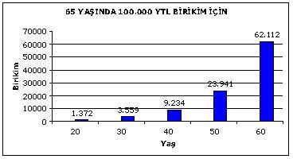
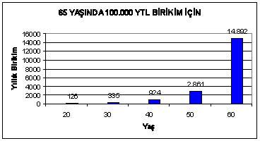

ZENGİNLİK YOLUNDA KARŞIMIZA ÇIKAN ENGELLER
Kazananlarla kaybedenler arasındaki fark, alışkanlıklarındaki farklılıklarda yatar.
İyi alışkanlıklar başarının anahtarıdır.
Kötü alışkanlıklar ise yenilginin kapılarını açar.
Amerika Birleşik Devletleri’nin en önemli birkaç finansal danışmanından biri olan Ric Edelman, zenginliğe giden yolda karşımıza dört engel çıktığını söylüyor. Bu dört engelin neler olduğunu ve onlardan nasıl kurtulabileceğinizi sizinle paylaşmak istiyorum.
Ali ve Ayşe iki kardeş. Bu iki kardeşten Ali, 18 yaşına gelip liseden mezun olduktan sonra ailesinin işinde çalışmaya başladı. Aynı zamanda da açık öğretim fakültesinde öğrenciliğini devam ettirdi. Çalışmaya başladığı 18 yaşından üniversiteyi bitirip askere gittiği zaman olan 26 yaşına kadar Ali her yıl 1000 TL birikim yaparak bunu yatırım fonlarında değerlendirdi. Askere gidince bu yatırımlarını durdurmak zorunda kaldı.
Ali’nin kardeşi Ayşe ise liseden sonra örgün bir öğrenim programında tıp eğitimi alarak üniversiteye devam etti. 25 yaşına geldiğinde mezun oldu ve 26 yaşından itibaren her yıl kazancının 1000 TL’lik bölümünü Ali ile aynı yatırım fonunda değerlendirdi ve bunu yapmaya tam 40 yıl boyunca 65 yaşına gelene kadar devam etti. Diğer bir deyişle, Ali’nin yatırım yapmayı durdurduğu sene Ayşe yatırım yapmaya başladı. Aralarındaki esas fark Ali’nin yatırım yapmayı durdurmuş olmasına rağmen Ayşe’nin tam 40 yıl boyunca yatırım yapmaya devam etmesidir.
65 yaşına geldiklerinde sizce hangisinin daha fazla parası olacak?
Paranın Zaman Değeri
Ali ve Ayşe’nin yatırımlarından %10 getiri elde ettiklerini varsayarak hesabımızı yaparsak 65 yaşına geldiklerinde Ali’nin 517.560 TL toplam varlığına karşılık Ayşe’nin 441.593 TL parası olur. Düşünürsek Ali, 8 yıl boyunca her yıl 1000 TL olmak üzere toplam 8.000 TL yatırım yaptı. Buna karşılık Ayşe 40 yıl boyunca her yıl 1000 TL olmak üzere toplam 40.000 TL yatırım yaptı. Ayşe’nin bu tabloya göre Ali’nin 5 katı daha fazla miktarda yatırım yaptığını görüyoruz. Bu yüzden 65 yaşına geldiğinde Ayşe’nin daha fazla birikime sahip olması gerektiğini düşünebilirsiniz. Halbuki Ali’nin dönem sonu birikimi Ayşe’nin birikiminden 75.967 TL daha fazla ki bu hiç de azımsanacak bir miktar değil.
Bu durumu bir tablo yardımıyla özetleyecek olursak:
ALİ | AYŞE | |
Yatırım Süresi | 8 yıl | 40 yıl |
Yatırım Miktarı | 8.000 TL | 40.000 TL |
Yıllık Getiri | %10 | %10 |
Değerlenme Süresi | 48 yıl | 40 yıl |
Toplam Birikim | 517.560 TL | 441.593 TL |
Ali’nin Ayşe’ye göre süre sonunda daha fazla yatırım gelirine ulaşması aslında şaşılacak bir durum değil. Çünkü 26 yaşındaki duruma bakarsak eğer, Ali’nin o zamana kadarki yatırımlarının ulaştığı toplam değer 12.579 TL. Ayşe ise sıfırdan başlıyor. Ali bu anapara ile yola çıkıyor ve buna hiçbir ekleme yapmıyor. Ayşe’nin ise anaparası yok ve sürekli yatırım yapmak durumunda kalıyor. Ali, 26 yaşına kadar oluşturduğu birikimin 26 yaşından sonra da ona dokunmayarak kendisi için çalışmasını sağlıyor. Ayşe ise öncesinde bir birikimi olmadığı için öncelikle onu oluşturmak zorunda kalıyor. Özetleyecek olursak, 26 yaşından itibaren Ali, paranın kendisi için çalışmasını sağlarken, Ayşe para için çalışmaya başlıyor.
Bu örnek, paranın zaman değerini ve yatırımın ertelenmeden yapılması gerektiğini çok iyi anlatıyor. Dünyanın en zengin ikinci insanı olan borsa yatırımcısı Warren Buffet, bu durumu farklı bir şekilde ifade etmektedir. Borsada ilk yatırımını yapacağı zaman elinde 100 dolar sermayesi vardır ve babası ona yatırım yapmak için doğru bir zaman olmadığını söyler. Ancak Buffet babasını dinlemez ve 100 dolar ile ilk yatırımını yapar. Kendi ifadesiyle, "Eğer o gün o yatırımı yapmamış olsaydım, bugün asla Warren Buffet olamazdım".
Yatırımın miktarından daha önemli olan yatırımın süresidir. Paranın zaman değerini kavramış olan biri portföyündeki paranın artmasını ya da belli bir seviyeye ulaşmasını beklemeden yatırım yapmalıdır. Yatırım yaptığımız her kuruş, paranın bizim için çalıştığının bir göstergesiyken, yatırım yapmadığımız her kuruş da bizim para için çalıştığımızın bir göstergesidir. Zenginliğe giden yolda karşımıza çıkan dört engel vardır:
Ali, yukarıdaki örnekte yatırımlarını ertelemediği için avantajlı konuma geçti ve daha az çaba sarf etmesine rağmen bu avantajını korudu. Üşenme, erteleme, vazgeçme! Bunların üçü de önemli ama para yönetiminde en önemlisi ertelememek diye düşünüyorum. Finansal planlama süreci 20’li yaşlarda başlar ve bu yaşlarda doğa yasalarının da gereği olarak karşı cinse yapılacak olan yatırımla, herhangi diğer bir yatırımdan daha fazla ilgiliyizdir! Hem zaten önümüzde uzunca bir zaman da vardır. 60 yaşında emekli olacağımızı varsayarsak ki sosyal güvenlik sistemimiz bu yaşı kıstas alıyor, daha 40 yıla yakın bir zaman boyunca yatırım yapma fırsatımız vardır. Doğru mu?
Yanlış!
Bugüne kadar danışmanlık verdiğim insanların önemli bir bölümünde bununla karşılaştım. Emeklilik planlaması fazla ilgi ve merak uyandırmayan bir konu. Bunun birçok sebebi olsa da en önemlileri arasında ülkemizin ekonomik istikrarsızlığı ve insanların 40 yıl sonrasını düşünmek istememeleri gösterilebilir. Genç, sorumlulukları daha az, ekonomik özgürlüğe sahip birine yaşlandığında, düşük bir emeklilik maaşına sahip olacağını, çocuklarını evlendirmesi gerekeceğini, sağlık durumunun gençliğine göre daha kötü olacağını ve bunlar için her zamankinden daha fazla paraya ihtiyaç duyacağını söylemek elbette benim de hoşuma gitmiyor. Amaç, kötü bir tablo çizmek değil, duyarlı bir bilinç geliştirmektir.
Ortalama bir insanın orta yaş ve emeklilik yıllarına en iyi ve en verimli yatırım yapabileceği dönem 20’li yaşlarıdır. 20’li yaşların ortasında ve ya sonunda evlendiğini düşünecek olursak, evinin giderleri, çocuk sahibi olma ve çocuk yetiştirme giderleri, ev sahibi olma, araba satın alma,, ikinci çocuk, bu arada ilk çocuğun büyümesi ve okul taksitlerinin başlaması, çocukların sonu gelmez istekleri, harçlıkları, lise ve üniversite eğitimleri, evlilikleri, emeklilik derken hayat geçiverir. O zaman birçok insan "Keşke bunu 40 yıl önce düşünseydim!" der. Gençlik yıllarında biraz daha duyarlı olarak emeklilik yıllarını rahat geçirmek, torun sevmek varken vurdumduymaz tavırlarla ne diye ömür boyu sıkıntı çekelim? Zenginliğe giden yolda ilk engel; kazancı, tasarrufu ve yatırımı ertelemektir. Bunun önüne geçmenin en iyi yolu işe bugün başlamaktır. Çünkü geleceğimizi planlamak için en doğru zaman ya da ideal zaman yoktur, sadece şu an vardır.
Ertelemenin Maliyeti
Yatırımları ertelemeyi daha somut bir ifade ile ele alalım. Diyelim ki, 65 yaşına geldiğinizde 100.000 TL nakit parayla emekli olmak istiyorsunuz. Yıllık %10 getiriyle yaş gruplarına göre bir defaya mahsus yapmanız gereken birikim tutarı aşağıdaki tabloda gösterilmiştir. Tablo, vergiler istisna tutularak hazırlanmıştır.

Tabloda da görüldüğü gibi 65 yaşında 100.000 TL birikime sahip olmak için 20 yaşındayken 1.372 TL tasarruf edip bu paraya 45 yıl boyunca el sürmeden %10 getiriyle değerlendirmemiz yeterli oluyor. Diyelim ki bu kararı erteledik ve bunu 30 yaşında yapmaya karar verdik, bu durumda rakam 3.559 TL’ye yükseliyor ki bu neredeyse 20 yaşındaki rakamın üç katı. Erteledikçe vermemiz gereken emek artıyor. 40 yaşına geldiğimizde rakam 9.234 TL’ye yükseliyor ama yine de imkânsız değil. 50 yaşında yapılması gereken tasarruf ise 23.941 TL, ertelemenin maliyetinin en açık şekilde görüldüğü rakam da bence bu. Karşılaştığım örneklerde birçok insanın emekliliğini 40 yaşından sonra hatırlayıp plan yaptığına şahit oldum. 60 yaşının üzerinde durmaya bile gerek yok ama genel bilgi olsun diye söylüyorum miktar 62.112 TL’ye yükseliyor, o yaştaki birinin tasarruf etmesi neredeyse imkansız olan bir rakama yükseliyor.
Yukarıdaki tabloyu şu an için gerçekleştirmem mümkün değil, yeterli nakdim yok diyorsanız, size başka bir formül daha sunabilirim. Hedef yine aynı, 65 yaşına geldiğinizde 100.000 TL nakit paranız olsun istiyorsunuz ve yine yıllık %10 getiriyle değerlendireceksiniz. Yukarıda bir kereliğine tasarruf yapmış ve o tasarrufumuza da 65 yaşına gelinceye kadar dokunmamıştık. Şimdi de her yıl düzenli olarak birikim yapacağımızı varsayalım, bakalım o zaman rakamlar ne şekilde değişiyor. Aşağıdaki tabloda hedefinize ulaşabilmek için yıllık olarak tasarruf etmeniz gereken rakamları hazırladım:

Tasarruf etmeye 20 yaşında başlayan biri tabloda da görüldüğü gibi yılda 126 TL tasarruf etmeli ve bu tasarruf 65 yaşına kadar devam etmelidir. Ekonomik durumu ne olursa olsun hemen herkes bunu bir hedef olarak gerçekleştirebilir. Hedefini 30 yaşına erteleyen biri için bu rakam 335 TL’ye yükseliyor. Yıllık 335 TL de bence oldukça düşük bir rakam. 40 yaşında emeklilik planlamasına başlayacak olan biri yıllık 924 TL tasarruf etmelidir. 50 yaşına gelindiğinde işler biraz değişiyor, rakam 2.861 TL’ye yükseliyor ve nakit olarak her yıl bu tasarrufu yapmak mümkün olmayabilir. 60 yaşında işe başladığınızda ise 65 yaşına kadar geçecek 5 senelik süreçte her yıl nakit 14.892 TL tasarruf etmeniz gerekiyor. Bu iki tablonun ertelemenin para yönetimi açısından ne kadar zararlı olduğunu yeterince gösterdiğini düşünüyorum.
1.200 TL’nizi Nasıl 36.925 TL Yaparsınız?
Tablolarda 20 yaşında değil de 10 yıl erteleyip tasarruf ve yatırım yapmaya 30 yaşında başlarsak neler olacağını hesapladık birlikte. Parasal Zekâ’nın logosunda kum saatini ve parayı çağrıştıran $ işaretini kullanırken, Parasal Zekâ’nın parayı zamana, zamanı da paraya dönüştürdüğü mesajını vermek istedim. Çünkü insanları zenginleştiren iki şey para ve zamandır. Bana sorarsanız zaman paradan çok daha önemlidir. Çünkü paranızı kaybettiğinizde geri kazanabilirsiniz ama zaman için aynı şansa sahip değilsiniz. Bu yüzden 10 yıl gibi geniş bir zaman dilimini değil de, sadece bir yılı ele alacağım.
Varsayalım ki, 65 yaşında emekli olma isteyen biri var. 30 yaşında da aylık 100 TL birikim yapmaya başlıyor ve bunu 65 yaşına kadar devam ettiriyor. Bu birikimlerine de yıllık %10 getiri sağladığını düşünelim. 30 yaşında birikime başladığında 65 yaşında elinde 378.885 TL nakdi olacaktır. Bir de aynı örneği birikime 31 yaşında başlandığını düşünerek ele alalım. Bu durumda toplam birikim 341.961 TL olacaktır. Arada sadece 12 aylık bir fark ve ertelendiği için tasarruf edilmemiş bir 1.200 TL vardır, ancak dönem sonundaki fark 36.925 TL olarak karşımıza çıkar. Dolayısıyla 30 yaşında 1.200 TL tasarruf edip ertelememiş olsaydık aynı para bize 36.925 TL olarak geri dönecekti. 1.200 TL paranız varsa bunu 36.925 TL yapıp yapmama konusundaki seçimi size bırakıyorum.
Yatırımlarınızı ertelemeyin, bugün başlayın!
Harcama alışkanlıklarının ne durumda olduğunu bilen insan sayısı çok azdır. Çevrenizdeki birkaç kişiye harcama alışkanlıklarının ne durumda olduğunu soracak olursanız, bu konuda muhtemelen ellerinden geldiğince dikkat ettiklerini söyleyeceklerdir. Hatta bu soruyu kendinize sorun, kendinizle ilgili olarak da aynı şeyi düşünüyor olmalısınız. Peki bu ne derece doğru? Bir örnek vererek harcama alışkanlıklarının finansal durumumuz üzerindeki etkilerinin ne kadar kritik olduğunu açıklamak istiyorum.
Finansal danışmanlık konusunda görüştüğüm Belgin ve Bora evli bir çifttir. Her iki eşin de çalıştığı şanslı ailelerden biri onlar. Dört yaşında bir erkek çocukları var ve yılda toplam 60.000 TL kazanıyorlar. Sorunları da ortalamanın üzerinde gelirleri olmasına rağmen yeterince tasarruf ve yatırım yapamıyor olmaları. Lüks arabalara binmedikleri, pahalı tatillere çıkmadıkları, markalı ürünler kullanmadıkları halde ekonomik olarak bir türlü istedikleri konuma gelememekten yakınıyorlar. Manzara anlattıkları kadarıyla hiç de fena değil, öyleyse sorun nereden kaynaklanıyor? Belgin ve Bora’nın dediğine göre her gün işyerlerine gittiklerinde bir gazete alıyorlar (35 kr), sabah kahvaltısı için bir poğaça (50 kr) ve yanında otomattan alınan bir kahve (75 kr). Öğle yemeğinden sonra ise tatlı ya da içecek soğuk bir şeyler (1,5 TL) alıyorlar. Birinin günlük toplam harcaması 2,6 TL, her ikisinin toplam günlük harcaması 5,2 TL yapar. Ayda 20 iş günü olduğunu varsayarsak toplam aylık giderleri 104 TL. Bir yılda bunun toplamı 1248 TL yapar. Belgin ve Bora çiftinin gereksiz harcadıkları yıllık tutar 1248 TL. Durun daha bitmedi, kendi işinizi yapmıyor ve maaşlı olarak çalışıyorsanız paranız kazanç olarak elinize geçmeden önce ona ne olur? Vergilendirilir. SSK prim kesintisinin ortalama %35 olduğunu düşünürsek, Belgin ve Bora çiftinin 1248 TL tutarındaki bu harcamayı yapabilmek için 1920 TL kazanmak zorunda olduklarını görürüz.
Hiç kendinize sordunuz mu, kazandığınız paralar nereye gidiyor? Bence sormadıysanız şu an tam zamanı! Yukarıdaki örnekte Belgin ve Bora çiftinin yıllık kazancının %3’ünü gereksiz yere harcadıklarını görüyoruz. Eğer cebinizdeki para çok çabuk bitiyorsa, harcamalarınızı gözden geçirmenizi tavsiye ederim. Harcamalarınızı azaltıp tasarruf ve yatırımlarınızı nasıl artırabileceğinize dair örnekleri ilerleyen bölümlerde paylaşacağım.
Arkadaşlarımdan biri geçenlerde enflasyon ne kadar yükselirse yükselsin bundan hiç etkilenmediğini söyledi. Şaşırdım ve bunu nasıl yaptığını sordum. "Bir örnek vererek açıklayayım." dedi. "Benzin fiyatlarına sürekli zam geliyor. Zamlara birçok insan sinirleniyor ama benim umurumda bile değil." "Nedenini sorduğumda, "Çünkü ben hep 50 TL’lik benzin alıyorum." Diye yanıtladı. Zenginliğin önündeki engellerden, Türk milletinin en fazla aşina olduğu enflasyondur desem, buna pek azınız itiraz edecektir.
1000 TL (Enflasyon Oranı %10) | ||
Yıllar | Gelecek Değer | Şimdiki Değer |
5 | 621 TL | 1.611 TL |
10 | 386 TL | 2.594 TL |
15 | 239 TL | 4.177 TL |
20 | 149 TL | 6.727 TL |
25 | 92 TL | 10.835 TL |
30 | 57 TL | 17.449 TL |
35 | 36 TL | 28.102 TL |
40 | 22 TL | 45.259 TL |
Yukarıdaki tabloyu enflasyonun etkisini daha iyi anlayabilmek için inceleyelim. Tabloya göre, bugün 1.000 TL parası olan birinin parasının değeri, yıllık %10 enflasyon varsayımıyla, bundan 5 yıl sonra 621 TL olacak. Tablodaki "gelecek değer" sütununda, yıllara göre paramızın %10 enflasyon dolayısıyla ne kadar değer kaybettiğini görüyoruz. Diğer taraftan eğer 5 yıl sonra 1000 TL satın alma gücümüz olsun istiyorsak bugün elimizde bulunması gereken miktar 1.611 TL. Başka bir ifadeyle elimizde şu anda 1.611 TL paramız varsa 5 yıl sonra 1.000 TL satın alma gücümüz olur. Enflasyon umarım düşük seviyelerde kalır, çünkü %10’luk bir oranın bile hayatımızı nasıl etkilediğini tabloda görebiliyoruz. Son 10 yıllık ortalama enflasyon oranının ülkemizde %10’un çok üzerinde olduğunu biliyor muydunuz?
Enflasyon konusundaki tavsiyem, ne olursa olsun 50 TL tutarında benzin almaktansa, onun etkilerinin farkında olup yatırım yaparak karşı önlemler geliştirmenizdir.
Vergiler ve vergi planlaması kişisel finans ve para yönetiminin en önemli konularından biridir. Vergilerden ya da vergi ödemekten hemen hiç kimse hoşlanmaz. Güçlükle kazanılmış olan bir paranın zorunlu olarak bir yerlere verilmesinden, fıtrat olarak hiçbir insanın hoşlanması mümkün değildir. Çünkü ortalama vergi yükünün %30 olduğunu varsayarsak ve günde ortalama 10 saat çalıştığımızı düşünürsek, her gün 3 saat vergilerimizi ödemek için çalışıyoruz demektir.
Aşağıdaki tabloya göre yıllık yatırım gelirlerinizin %14 olduğu varsayılmıştır. Bu kazançtan %20 gelir vergisi ve %15 stopaj kesintisini düşünce geriye %11,9 kazanç kalır. Kalan rakamdan da enflasyonu çıkardığımızda elimize geçen miktar %1,9 olarak karşımıza çıkar. Şaka gibi değil mi?! Tablonun bize verdiği mesaj şu: Enflasyonun %10 olduğu bir dönemde herhangi bir yatırımızdan yıllık %14’ün altında getiri elde ederseniz zarardasınız demektir. Eğer vergiler ve enflasyona rağmen kazanmak istiyorsanız, yıllık kazanç oranınız kesinlikle %14’ün üzerinde olmalıdır. tabloda güncel
Vergi ve Enflasyon Yatırım Kazançlarımızı Nasıl Etkiler? | |
% | |
Kazancınız | 14 |
Eksi Vergi (%20 Gelir Vergisi ve %15 Stopaj) | 2,1 |
Kalan | 11,9 |
Eksi Enflasyon (%10) | 10 |
Net Kazanç | 1,9 |
Aşağıda bu tablonun biraz daha geliştirilmiş versiyonunu bulacaksınız:
Paranızın Satın Alma Gücünü Korumak İçin Kazanmanız Gereken Tutar | ||||||||||||
Enflasyon Oranı (%) | ||||||||||||
5 | 6 | 7 | 8 | 9 | 10 | 11 | 12 | 13 | 14 | 15 | ||
Vergi Oranı | 0% | 5,0 | 6,0 | 7,0 | 8,0 | 9,0 | 10,0 | 11,0 | 12,0 | 13,0 | 14,0 | 15,0 |
5% | 5,3 | 6,3 | 7,4 | 8,4 | 9,5 | 10,5 | 11,6 | 12,6 | 13,7 | 14,7 | 15,8 | |
10% | 5,6 | 6,7 | 7,8 | 8,9 | 10,0 | 11,1 | 12,2 | 13,3 | 14,4 | 15,6 | 16,7 | |
15% | 5,9 | 7,1 | 8,2 | 9,4 | 10,6 | 11,8 | 12,9 | 14,1 | 15,3 | 16,5 | 17,6 | |
20% | 6,3 | 7,5 | 8,8 | 10,0 | 11,3 | 12,5 | 13,8 | 15,0 | 16,3 | 17,5 | 18,8 | |
25% | 6,7 | 8,0 | 9,3 | 10,7 | 12,0 | 13,3 | 14,7 | 16,0 | 17,3 | 18,7 | 20,0 | |
30% | 7,1 | 8,6 | 10,0 | 11,4 | 12,9 | 14,3 | 15,7 | 17,1 | 18,6 | 20,0 | 21,4 | |
35% | 7,7 | 9,2 | 10,8 | 12,3 | 13,8 | 15,4 | 16,9 | 18,5 | 20,0 | 21,5 | 23,1 | |
40% | 8,3 | 10,0 | 11,7 | 13,3 | 15,0 | 16,7 | 18,3 | 20,0 | 21,7 | 23,3 | 25,0 | |
45% | 9,1 | 10,9 | 12,7 | 14,5 | 16,4 | 18,2 | 20,0 | 21,8 | 23,6 | 25,5 | 27,3 | |
Yukarıdaki tabloda paranızın satın alma gücünü korumak için enflasyon ve vergi oranlarına göre kazanmanız gereken minimum tutarlar verilmiştir. Örnek olarak birini kalın karakterlerle işaretledim. İşaretli olan rakamın anlamı şu: Enflasyon oranının %10 ve vergi oranının %25 olduğu bir ekonomik ortamda yılda %13,3 kazanç elde ederseniz, başa baş noktasına ulaşmış olursunuz. Başa baş noktası ne kârın ne de zararın olduğu noktadır. Bu noktada paranızın değeri aynı kalmış, kâr ya da zarar etmemişsiniz demektir.
Dersimiz matematik. Bu tabloyu çok eğlenceli buluyorum, neden mi? Çünkü bu tablo yardımıyla paramızı bir bankaya yatırdığımızda ne kadar kazandığımızı (ya da kazanamadığımızı) rahatlıkla görebiliyoruz. Tabloda işaretli olan bölüme bakalım. Bugünkü enflasyon oranımız %10. %25 de mevduatlarımızdan kesilen gelir vergisini simgeliyor. Kazanmamız gereken minimum tutar %13,3. Peki bankalar ne kadar getiri sağlıyorlar biliyor musunuz? Yorulmayın ben söyleyeyim, %14. Kazancınız %0,07. Yani bugünkü rakamlarla mevduat faizine yatırım yaparsanız yılda %1’in altında bir kazanç elde edersiniz. Peki bu sadece bugün mü böyle? Maalesef hayır, hep böyleydi. Enflasyon yükselirse bankalar faiz oranlarını yükseltirler, düşerse de düşürürler. Peki diyelim ki paranızı bir yıllığına vadeli mevduat hesabına yatırdınız, bu arada enflasyon %3 yükseldi, sonuç ne olur? Zaten %1 bile kazanmıyordunuz, şimdi bir de zarara girdiniz. Bu rakamlar moralinizi bozmasın, bundan kurtulmanın ve kazancınızı yükseltmenin yolları var, ilerleyen bölümlerde bunları da paylaşacağım.